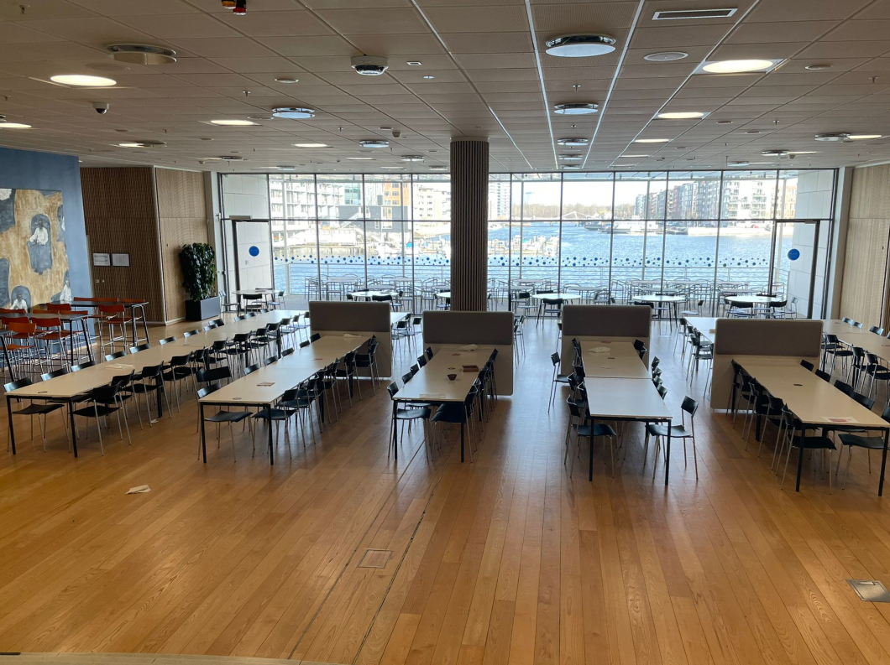
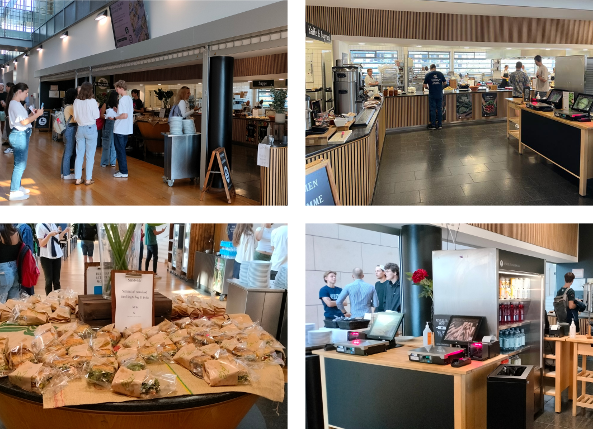
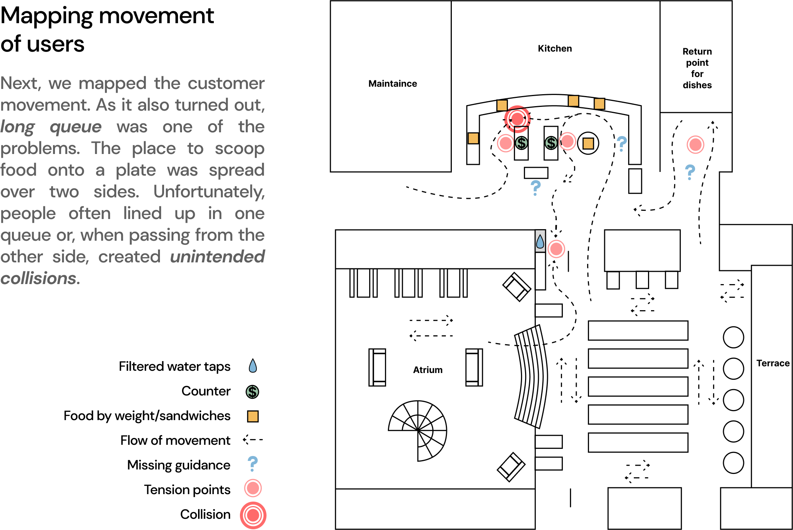
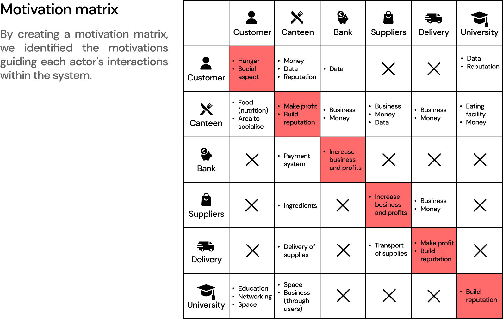
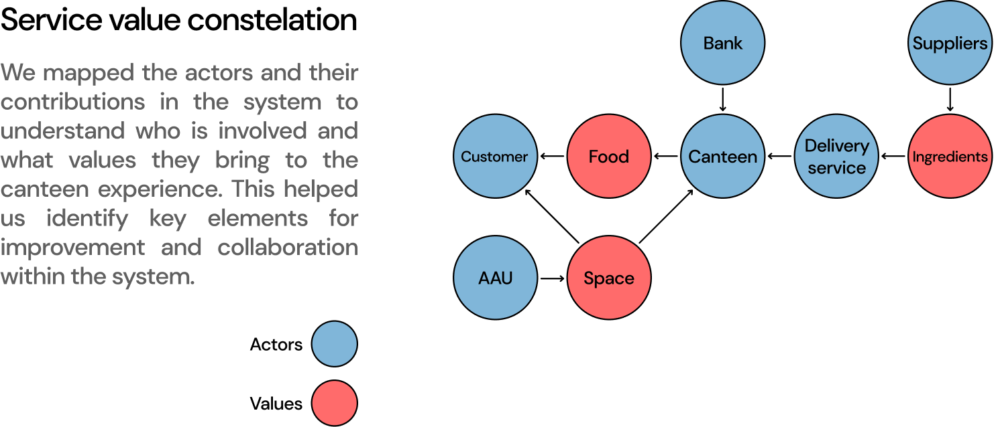
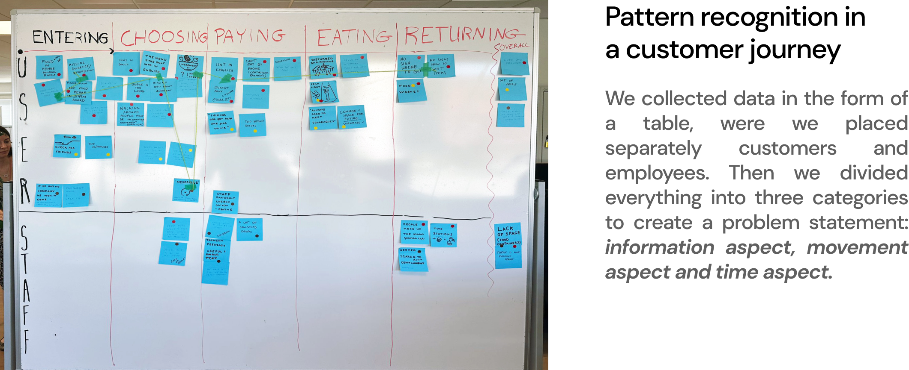
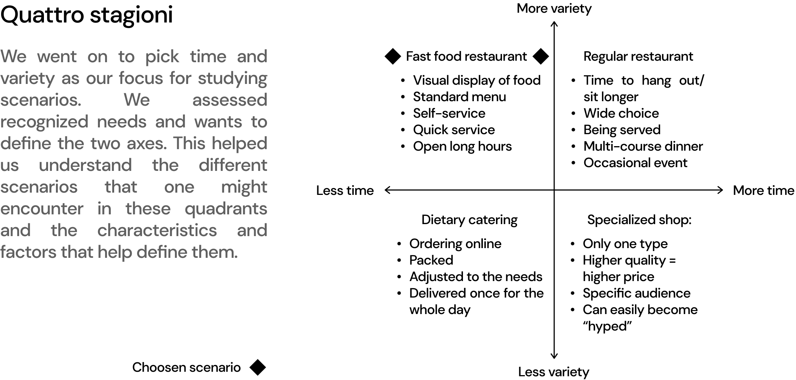
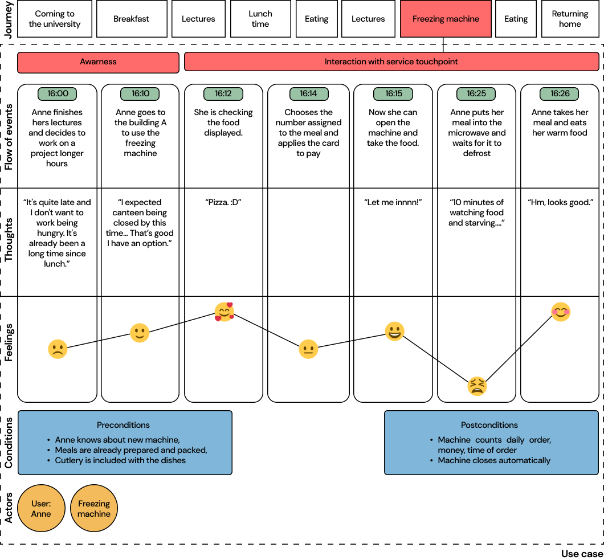
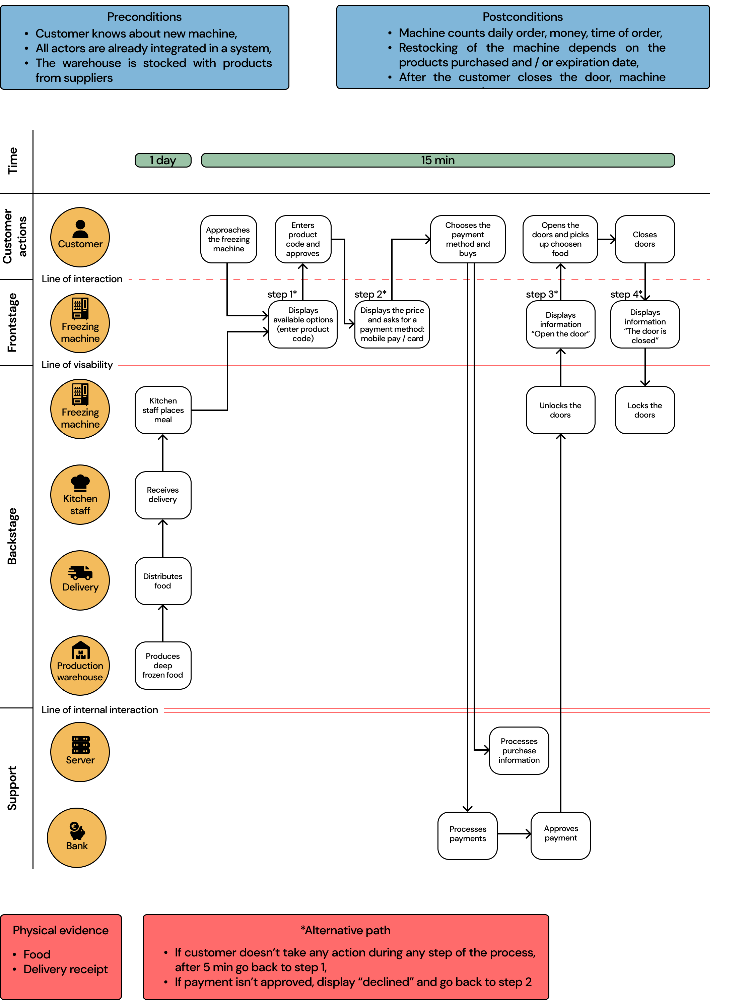
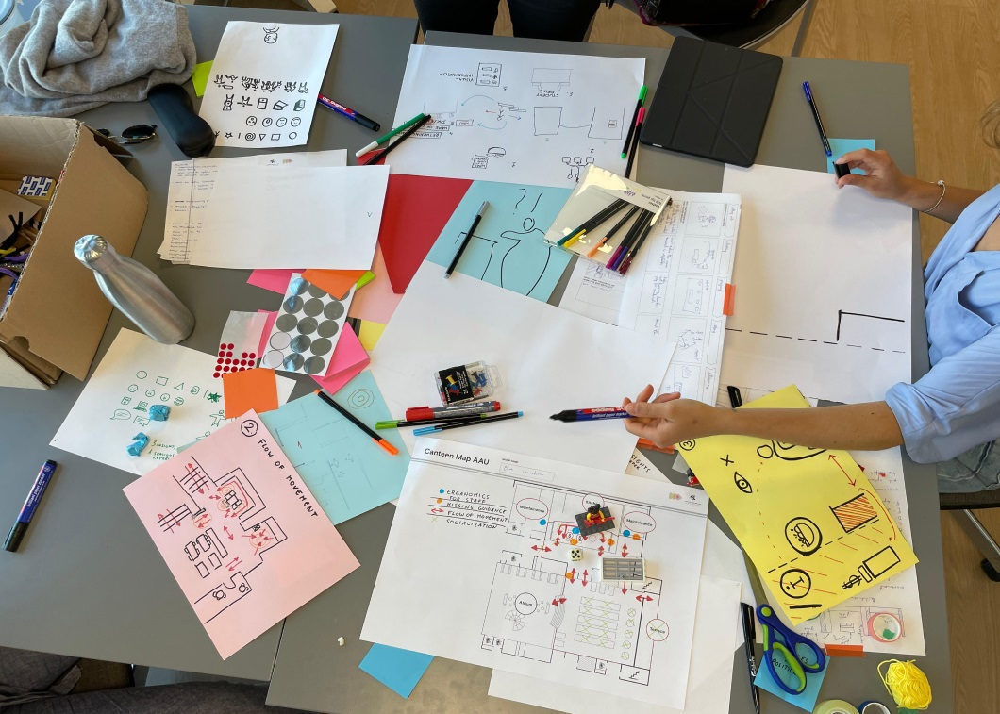

After-hours canteen
Jespers Torvekøkken operates Denmark's largest lunch kitchen situated on Vandtårnsvej in Søborg, where over 7,500 lunches are served daily. Moreover, their presence extends with over 50 canteens nationwide, complemented by a lunch house in Søften, and they also provide catering and event services for both private and corporate clientele.
The brief:
Design a solution to improve experience of the canteen.
Year:
2023
Theme:
Service System Design, proposed service
Discover
Urban Safari
The first step was to play the role of canteen customers. So we queued up to buy lunch and understand more precisely what problems we would encounter in doing so. Additionally, we did a couple of unstructured interviews to gather the largest possible pool of potential pain points. One of the main problems we learned about during the interviews was that some students wanted to eat after class, but the canteen is not open that long.
Storyboard
The storyboard focus on a specific moment (lunch time) where customer interacts with the canteen service. This represents his/hers attitude and general series of actions.
 Define
How might we?
The storyboard focus on a specific moment (lunch time) where customer interacts with the canteen service. This represents his/hers attitude and general series of actions.
Develop
Customer journey
After the ideation, we created two solutions. They solve two problems: creates clear point where the studends can pick up the student meal (and thanks to this divides the line into two separate ones) and avaliable meals after working hours of the canteen- freezing machine, where students can pay and use the microwave to heat the meal. The customer journey presented here and the subsequent blueprint was mainly based on one of the solutions, namely the pick-up food option from freezing machine.
Service touchpoints
We mapped all touchpoints within the service to analyse potential interactions. The distinction of touchpoints was between “human to computer” and “computer to computer”. In this service, there is no need for creating interaction “human to human” which allows the process to be fully automated.
Deliver
Service blueprint
Last step was to create a service blueprint by mapping customer's interaction flow at a crucial touchpoint based on the chosen use case. This allowed for a detailed examination of each step and highlighted the roles and contributions of different actors. This visual clarity aided in identifying areas for improvement, optimizing the overall service, and ensuring a more effective flow.
 
The project was developed in collaboration with Emil Radosavljević,
Esther Nyírő and Elizabete Avotina